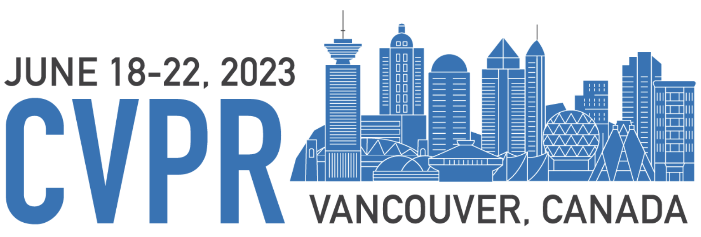

| Xindi Wu 1* | KwunFung Lau 1 | Francesco Ferroni 2 | Aljoša Ošep 1 | Deva Ramanan 1, 2 |
|
|
|
|
|
|  |
|
|
| 🌐 CVPR 2023 | 📄 Paper | 📽 Video |


Pix2Map: The graph encoder (bottom) computes a graph embedding vector \( \phi_{\text{graph}} \) for each street map in a batch. The image encoder, (top) outputs an image embedding \( \phi_{\text{image}} \) for each corresponding image stack. We then build a similarity matrix for a batch, that contrasts the image and graph embeddings. We highlight that the adjacency matrix of a given graph is used as the attention mask for our transformer-based graph encoder.

|
Xindi Wu, KwunFung Lau, Francesco Ferroni, Aljoša Ošep, Deva Ramanan
Pix2Map: Cross-modal Retrieval for Inferring Street Maps from Images
CVPR 2023
📄 Paper
📽 Video
🖼️ Poster
|